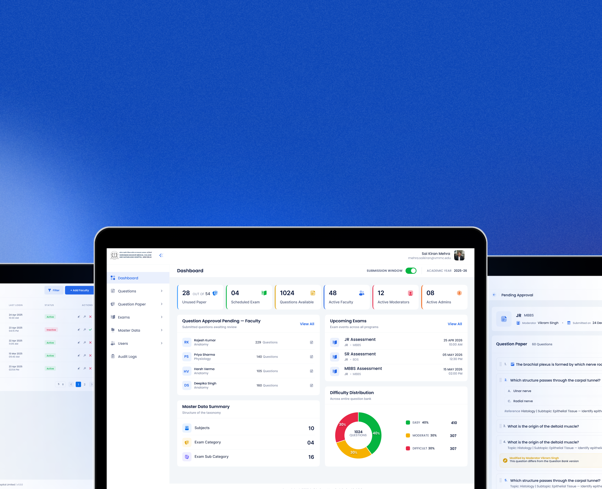

One
Central bank for every exam question
Vardhman Mahavir Medical College, linked to Safdarjung Hospital in Delhi, trains the doctors who will one day staff India’s hospitals. Its Examination Cell sits at the centre of that responsibility — every question paper it produces tests whether a future physician is ready to practise.
When an exam question is weak, leaked, or overused, two harms compound: a student is assessed on a paper that no longer measures competence, and the institution’s standing as a fair, rigorous examiner is quietly eroded. The work runs through three hands — faculty who write the questions, moderators who assemble them into papers, and the Admin (the Exam Cell in charge) who approves everything and schedules the exams.
Webority Technologies partnered with VMMC to design and build the digital backbone for the Examination Cell — a single secure system connecting faculty, moderators, and the Admin, where every question is controlled, every approval is enforced, and every action is recorded.

The platform was built around a controlled question bank and the tools that turn it into finished papers, governed by role-based access and a complete audit trail. Together they connect faculty, moderators, and the Admin on a single secure system.
One controlled repository where every exam question is stored, searchable, and tagged by subject and difficulty — replacing the scattered Word files, email threads, and personal folders that questions previously lived in.
The system tracks how many times each question has been used and automatically retires it after three uses, so the same questions cannot keep reappearing across papers and leaking to students.
Faculty submit questions and the Admin approves them into the bank. Moderators then assemble papers from approved questions, and the Admin approves the finished paper before it goes live — nothing reaches an exam hall unchecked.
A complete history and audit log records who did what and when — across question entry, moderation, approval, and paper assembly — giving the Examination Cell a defensible, tamper-evident record of every decision.
Login with OTP and role-based permissions, so faculty, moderators, and the Admin see and do only what their role allows — shielding sensitive assessment content from anyone outside its proper handling chain.
Papers are assembled from the bank, balanced for difficulty, and exported as clean PDFs — both the question paper and the answer key, ready to print — replacing the slow, error-prone work of building a balanced paper by hand.
VMMC Brain Bank replaces a scattered, manual, error-prone way of making exam papers with a single secure system. Questions stay organised, overuse is prevented automatically, proper approvals are enforced, and everything is recorded — so the Examination Cell saves time and the whole process becomes more accurate, transparent, and trustworthy.

National platform replacing manual appliance compliance inspections with offline-first field officer app and real-time dashboards for State Designated Agencies.

Offline-capable, multilingual mobile platform deployed in tribal and remote areas for India’s national sickle cell disease eradication initiative.
.png)
Multi-outlet facility management system deployed across Parliament premises, serving Members of Parliament in one of India’s highest-security environments.

Enterprise technology platform for Munitions India Limited — secure, compliant digital infrastructure supporting a Defence Public Sector Undertaking.

Multilingual e-commerce platform for the Ministry of Education’s National Book Trust — catalogue, payments and fulfilment for India’s flagship publisher.

Digital workflow platform for the Ministry of Parliamentary Affairs — legislative session tracking, document management and inter-ministry coordination.